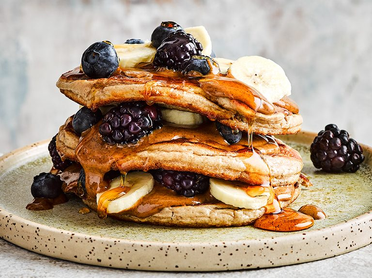

Protein pancakes

Protein pancake recipe
Pancakes that have loads of protein and yet taste great!
Serve with either
maple syrup or a spoonful of Greek yogurt with honey.
ingredients
- 1 cup whole wheat flour
- ½ teaspoon baking soda
- ½ teaspoon ground cinnamon
- ¼ teaspoon salt (Optional)
- 1 cup low-fat cottage cheese
- ¾ cup low-fat milk
- 2 eggs
- 2 tablespoons vegetable oil
Steps
- Stir flour, baking soda, cinnamon,
and salt together in a large bowl.
- Whisk cottage cheese, milk, eggs, and oil together in a separate bowl.
Pour into the flour mixture; whisk until batter is just
combined; it will be thick.
- Heat an oiled griddle over medium-high heat; when a water
drop on the surface dances and sizzles, it's ready.
Drop 1/4 cup batter onto the griddle.
Cook until golden brown and bubbles break the surface,
1 to 2 minutes. Turn and cook until set, about 1 minute
more.
Repeat with remaining batter.